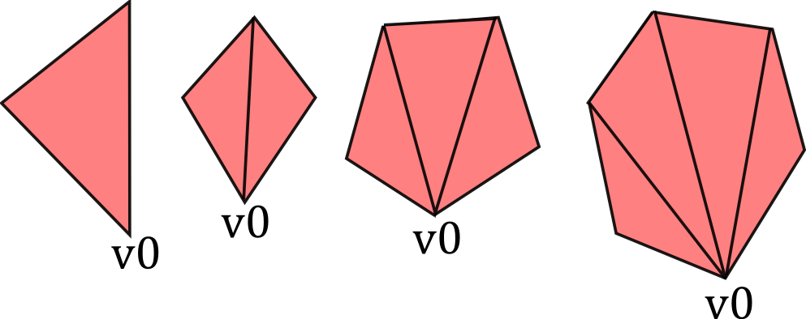

Flying High: Hobbyist OpenGL from Python
This is a transcript-from-memory (what I wish I'd said) of the talk I just gave at EuroPython 2010, for which I owe a debt of gratitude to Richard Jones for his last-minute moral support while wrestling with projectors and refresh rates; and to the whole team of hard-working volunteers, especially John Pinner & Richard Taylor, who gave so much time and effort to make EuroPython in the UK brilliant once again.
The demonstrated code is available at https://github.com/tartley/gloopy
With this talk I want to give an overview of creating 3D graphics in OpenGL from Python. Instead of covering topics already covered by a thousand OpenGL tutorials, I want to shift attention towards some ideas of how to generate the input to your renderer - how to algorithmically create geometry. I'll show that with just a paltry few hundred lines of relatively simple code, you can generate some interestingly chunky shapes - virtual sculptures, if you will. Since this talk has the word hobbyist in the title, I want to emphasise how easy this is, and I want to have some fun with the pretty pictures.
Out of interest, how many people here are already expert OpenGL users (a few hands hesitantly go up, then some think about it and go down again) err, I mean how many have already used OpenGL to do anything at all (about half the people raise their hand.) Alright, well, I want you all to leave here enthused to go generate your own images or animations or games.
Inspirations
As the field of computer graphics advances, there's an understandable tendency for more photorealism, This is laudable, but I also feel that the effort expended on achieving this technical goal is often undertaken without considering whether photorealism is the best aesthetic choice for a particular project.
In the past, games and other applications adopted particular visual styles out of technical necessity. As is often the case, these restrictions resulted in a diverse blossoming of creative ideas, producing an enormous set of distinctive visual styles and experiences.

Crucially, the most successful and memorable examples of these were projects that found ways to work in harmony with the restrictions of the medium, rather than attempting to gloss over them.
Advances in computing power and technique provide modern games and applications with a far wider range of options in how to present themselves visually, and yet the greater proportion of them seem content with a conventional and unimaginative 'near-photorealistic' appearance. This disappoints me, because I feel that projects that opt for a more highly stylised look, when appropriately chosen, can create a vastly more striking and memorable artistic experiences. This is true in movies and all kinds of art.
As an amateur graphics programmer, I don't have large resources nor much experience to throw at the problem, so my options and my abilities are limited. But, like a good artist, I believe it should still be possible to create things that are both strikingly beautiful and highly functional, either by working with the restrictions of the medium, or by finding creative ways to exploit or extend them.
In particular, the kind of minimal, clean-lined aesthetic that amateur OpenGL programs take on by default are useful for their crisp precision, as charting and visualisation tools. But above that, I love them for their stark minimalism, their clean lines and homogeneous fields of colour.

I wish more professional game developers had an incentive to aim for less conventional aesthetics - whether they be deliberately retro, or else striking out in some new direction of their own. It's that brave minority of projects which do this which form my inspiration.
Starting Point
I'm assuming we already have a minimal OpenGL application, that:
- Opens a window
- Provides an OpenGL context for us to render to
- Sets appropriate 3D projection matrix
- Sets the initial modelview matrix state based on the position and orientation of a 'camera' object
- Calls our empty 'draw' function once per monitor refresh.
This results in a blank screen, at 60fps. Here's a screenshot, so you can see exactly what it's doing:
I'm using pyglet & PyOpenGL for this, but this isn't important. Any framework that provides the above abilities, such as PyGame, along with bindings to OpenGL, will be just fine. Whichever framework you use, this minimal application might take on the order of about 150 lines of code, and is covered in countless tutorials all over the web.
From here on in I plan to show (or at least describe) pretty much all of the code that I add on top of this minimal OpenGL loop.
Goal
To begin with, I'm going to lead you as quickly as I can through a Shape class, that model 3D shapes, in a way useful for the creation of geometry, and then a Glyph class that converts these geometries into arrays for OpenGL. Finally these arrays get passed into a Render class, which simply calls glDrawElements to render them.

Once the above infrastructure is in place, we can have some fun generating interesting shapes to make pretty pictures with. The conventional way to provide geometry to your OpenGL code is by loading your data from files. Today though, I want to stick with generating geometry from code, to see where that leads.
Modelling Polyhedra
A polyhedron is a 3D shape with flat faces and straight edges. We can model coloured polyhedra using a simple Shape class:
Vec3 = namedtuple('Vec3', 'x y z')
Color = namedtuple('Color', 'r g b a')
class Shape(object):
def __init__(self, vertices, faces, face_colors):
# list of Vec3s
self.vertices = vertices
# list of faces, each face is a list of indices into 'vertices'
self.faces = faces
# List of colors, one per face
self.face_colors = face_colors
An instance of this class, for example, might represent a yellow cube, or a tetrahedron with green and black faces, or any other coloured polyhedron we can imagine.
To demonstrate how classes Shape, Glyph and Render hang together, let's examine an even simpler example, a yellow triangle joined to a red square:
You can see this geometry features five vertices (v0 to v4), which are used by the two faces. This might be represented by an instance of Shape:
v0 = Vec3( 1, 1, 0)
v1 = Vec3( 1, -1, 0)
v2 = Vec3(-1, -1, 0)
v3 = Vec3(-1, 1, 0)
v4 = Vec3( 1, 0, 2)
red = Color(255, 0, 0, 255)
yellow = Color(255, 255, 0, 255)
shape = Shape(
vertices=[v0, v1, v2, v3, v4],
faces=[
[2, 3, 4], # f0, triangle
[0, 1, 2, 3], # f1, square
],
face_colors=[red, yellow],
)
The integers in the 'faces' member are indices into the vertices list. So the triangular face, for example, is formed by linking vertices 2, 3 and 4.
Step 1. Creating a Ctypes Vertex array
In order to render our Shape, we need to convert it to some ctypes arrays that OpenGL will eat:
- glvertices - an array of GLfloats (three for each vertex)
- glindices - an array of GLubytes (one for each index of each face)
- glcolors - an array of GLubytes (four for each vertex)
To generate glvertices, we need to dereference the indices in Shape.faces, to produce a new list of vertices, rearranged into the order they are going to be drawn:
The most visible aspect of this change is that the vertices are re-ordered, such that the indices now simply read '0, 1, 2, 3, 4, 5...'. However that isn't actually necessary. The important part of this transformation is that vertices which are re-used are now duplicated in the vertex list. For example v0 now occurs twice. As a result of this vertex duplication, one the two instances of '0' in the faces lists now instead reads '3' (referencing the new second copy of v0).
This duplication of vertices is required, because when v0 is used for the first time, it is as part of the red triangle, and when it is used the second time it is as part of the yellow square. The color of the vertex changes from one occurrence to the next. All the attributes of a vertex (position, color, texture co-ords, normals, etc) are treated as an atomic unit, so whenever any attribute changes, as the color is changing here, the vertex position needs to be redundantly specified again, so as to create a new unique vertex with its own unique attribute values. Even if the color of v0 in our example was identical for each use, we will see later that other vertex attributes such as surface normals will still differ. Don't sweat trying to eliminate these redundancies, they are necessary, unless every single attribute of the re-used vertex (including surface normals) are identical.
The code in Glyph.get_glverts() performs this dereferencing step:
class Glyph(object):
def get_glverts(self, shape, num_glverts):
glverts = chain.from_iterable(
shape.vertices[index]
for face in shape.faces
for index in face
)
ArrayType = GLfloat * (num_glverts * 3)
return ArrayType(*glverts)
This uses a generator to produce the vertices in the order that we need them. 'ArrayType' shows the standard idiom to create a ctypes array - we take the datatype of the array elements, in this case GLfloat since our vertex positions consist of three floats, and multiply it by the required length of the array. This yields a new array type. The final return statement instantiates this array type using the data supplied by the glverts generator.
Step 2. Creating Ctypes Index Arrays
The second job Glyph has to do is create a ctypes indices array, which is derived from the Shape's faces. In doing this, it has to break the Shape's faces down into individual triangles.

The vertex list is unchanged by this step, and the first face - the triangle - is also unchanged. The second face, the square, has been broken into two triangles.
There are well-known algorithms for breaking an arbitrary polygon down into individual triangles. Using the utility functions found in the GLU library, this can be done in about 150 lines of Python. But in the interests of keeping it simple, I decided to restrict our code to just handling convex faces. Tessellating these faces can be done using a considerably simpler algorithm:
def tessellate(face):
'''
Break the given face into triangles.
e.g. [0, 1, 2, 3, 4] ->
[[0, 1, 2], [0, 2, 3], [0, 3, 4]]
Does not work on concave faces.
'''
return (
[face[0], face[i], face[i + 1]]
for i in xrange(1, len(face) - 1)
)
We again use a generator, to simply join up the face's first vertex with all the other vertices, like this:

Now we have our tessellate function, Glyph can now create the glindices array in much the same way as it generated the glvertices. I wasn't smart enough to write this as a generator first time around, I presume it would require more than one generator to do it (anyone?), so I'm needlessly creating an in-memory copy of the sequence, but it turns out I need to take its length right afterwards anyway, so what the heck:
class Glyph(object):
def get_glindices(self, faces):
glindices = []
face_offset = 0
for face in faces:
indices = xrange(face_offset, face_offset + len(face))
glindices.extend(chain(*tessellate(indices)))
face_offset += len(face)
ArrayType = GLubyte * len(glindices)
return ArrayType(glindices)
This is more complex than get_glvertices because it is performing both of the transformations described in steps 1 and 2. But it's still pretty straightforward. Note that the type of the index array will have change from GLubytes to GLushorts (or GLuints) if the number of vertices rises above 256 (or 65,536.)
Step 3. Creating Ctypes Color Arrays
Finally, we need an array of vertex colors. This is the simplest of the lot, generated by repeating the face_color for each face, once per vertex:
class Glyph(object):
def get_glcolors(self, faces, face_colors, num_glvertices):
glcolors = chain.from_iterable(
repeat(color, len(face))
for face, color in izip(faces, face_colors)
)
ArrayType = GLubyte * (num_glvertices * 4)
return ArrayType(chain(*glcolors))
First Light
It's might seem like a teensy bit of a slog to get here, but it hasn't been more than sixty lines of code, and now we're in a position to pass our ctypes arrays into OpenGL's drawElements. This happens in our Render.draw() method:
class Render(object):
def draw(self, world):
for item in world:
glVertexPointer(3, GL_FLOAT, 0, item.glyph.glvertices)
glColorPointer(4, GL_UNSIGNED_BYTE, 0, item.glyph.glcolors)
# TODO: handle the item's position and orientation
glDrawElements(
GL_TRIANGLES,
len(item.glyph.glindices),
GL_UNSIGNED_BYTE,
item.glyph.glindices
)
This is canonical OpenGL render code, so I'm not going to dissect it, but now we get some actual visible output:

Hooray! \o/ We can move our camera position around, and view this 3D object from different angles.
There's a minor wrinkle here that I'm glossing over. I've turned on backface culling, so the triangle and square aren't visible if we view them from the back. For all our future examples I plan on using closed polyhedra, so we won't be able to see the 'backs' of the faces - those will be on the inside of the polyhedron.
The Fun Stuff
So now we've got all our infrastructure in place, we can start creating factory functions to churn out some Shapes. Let's start with something straightforward, a tetrahedron (triangle-based pyramid):
def Tetrahedron(edge, face_colors=None):
size = edge / sqrt(2)/2
vertices = [
(+size, +size, +size),
(-size, -size, +size),
(-size, +size, -size),
(+size, -size, -size),
]
faces = [ [0, 2, 1], [1, 3, 0], [2, 3, 1], [0, 3, 2] ]
return Shape(vertices, faces, face_colors)
Which produces a tetrahedron:

Then a cube factory:
def Cube(edge, face_colors=None):
e2 = edge / 2
verts = list(itertools.product(*repeat([-e2, +e2], 3)))
faces = [
[0, 1, 3, 2], # left
[4, 6, 7, 5], # right
[7, 3, 1, 5], # front
[0, 2, 6, 4], # back
[3, 7, 6, 2], # top
[1, 0, 4, 5], # bottom
]
return Shape(verts, faces, face_colors)
The six faces are quite evident, but the use of itertools.product to produce the list of vertices perhaps deserves a bit of exposition. It's an inspired tip from ΤΖΩΤΖΙΟΥ. Just to spell it out in longhand:
>>> from itertools import repeat, product
>>> list(product(*repeat([-1, +1], 3)))
[(-1, -1, -1), (-1, -1, 1), (-1, 1, -1), (-1, 1, 1),
(1, -1, -1), (1, -1, 1), (1, 1, -1), (1, 1, 1)]
So there are the eight vertices of the cube, and that gets us the following:

We can add a few more vertices and faces, to make ourselves a truncated cube:

Once we've got truncated cubes, we might as well add one last face to form the entrance:

There's nothing to stop us adding several of these shapes into the world at once, but since we haven't yet moved any of them away from the origin, they just sit there, embedded within one another:

Moving objects around
In our earlier Render.draw() method, we left a 'TODO' comment in place, to note that we weren't yet handling item positions and orientations. Here's what Render.draw looks like when we fill that code in:
class Render(object):
def draw(self, world):
for item in world:
glVertexPointer(3, GL_FLOAT, 0, item.glyph.glvertices)
glColorPointer(4, GL_UNSIGNED_BYTE, 0, item.glyph.glcolors)
glPushMatrix()
glTranslatef(*item.position)
glMultMatrixf(item.orientation.matrix)
glDrawElements(
GL_TRIANGLES,
len(item.glyph.glindices),
GL_UNSIGNED_BYTE,
item.glyph.glindices
)
glPopMatrix()
Again, this is very standard OpenGL usage. To set an item's position attribute, I'm going to use a bit of code that I already snuck into the demo without telling you about. It's the code that moves the camera around in space. A simplified version is here, class Orbit, which will return a new position each time it gets called. The locus of this position is an orbit around the origin:
class Orbit(object):
def __init__(self, distance, speed, phase=None):
self.distance = distance
self.speed = speed
if phase is None:
phase = random.uniform(0, 2 * pi)
self.phase = phase
def __call__(self, time):
bearing = time * self.speed + self.phase
x = self.distance * math.sin(bearing)
z = self.distance * math.cos(bearing)
return Vec3(x, 0, z)
The actual camera uses a slightly longer version I call WobblyOrbit (not shown), which operates in exactly the same way. Any 'mover' class, i.e. one that returns a Vec3 position when called, can be used to move the camera, or any other item, around in space:
class GameItem(object):
def __init__(self, ** kwargs):
self.__dict__.update(** kwargs)
world.add( GameItem(
shape=Cube(1, repeat(red)),
mover=Orbit(distance=20, speed=4),
) )
# then, in world.update():
for item in self.items:
if item.mover:
item.position = item.mover(self.time)
Similarly, we can spin items using 'spinner' classes, that tweak an item's orientation as time goes by.
With these all in place, we can now add many Shapes to the world, each moving and rotating independently:

Next week: Composite Shapes...
This is all great as far as it goes, but it turns out we have a performance problem. Adding more than about 450 shapes at once starts to slow down below 60fps (This is all on my trusty 2005-era Thinkpad T60 laptop.) The bottleneck turns out to be in our Render.draw() loop. Each of those OpenGL functions are from (wrappers around) the OpenGL C library, and calling across the Python / C boundary like this incurs a per-function call overhead. Also, a second looming problem is that creating more interesting shapes is going to become more onerous and error-prone, as we create longer and more complex lists of vertices and faces in our code.
One partial solution to both these problems is to use composite shapes, in which we can compose many copies of our basic shapes into one single, more complex shape. This will allow us to use algorithmic means to produce more fun geometry, and will also help us draw more complex shapes, composed of many simpler shapes, without requiring several separate OpenGL function calls for each of the simple shapes.
Comments
Comments powered by Disqus